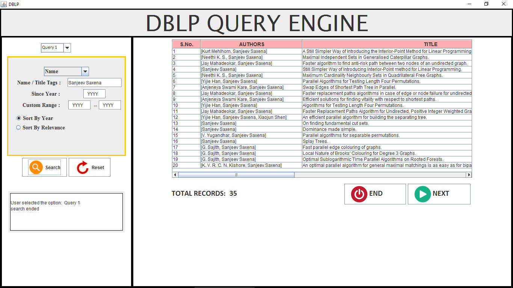
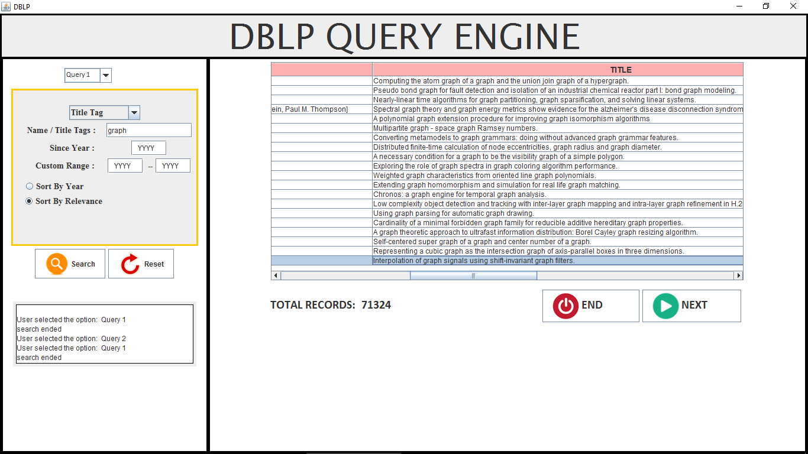
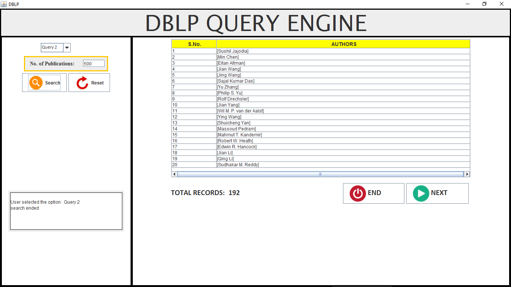
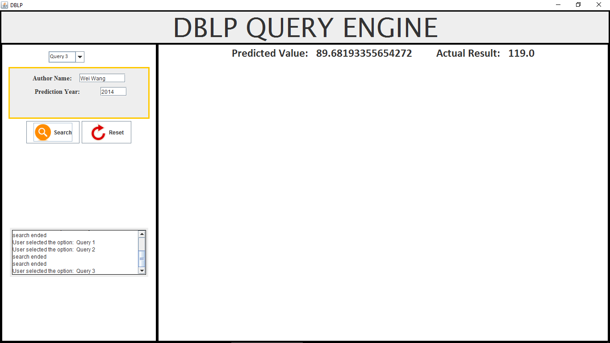

Description.
For our Project we had to make Offline Search Engine based on the databse given on http://dblp.uni-trier.de/ which involved parsing of data worth 1.8 GB which consists of notable Authors and there Publications using JAVA. The Project statement can be found on this
link .
Query 1
For Query 1 , We were given authors or publication tags and we had to search for all the information related to that tag . For Authors with different names we
used a special tag available in the dataset called www record tag and thus similar Author with different name were resolved .
These Queries also included options
for search by year , search by relevance , sort etc .


Query 2
For Query 2 , We had to provide all the Authors having publications greater than the given number .

Query 3
For Query 3 , We were given the Author and data upto upto which year we can access . Based on the data , We had to predict the number of publication for that author in the next year .

Authors and Contributors
@nerdy-kronos,@yagami_light are the contributors to this Project .
Support or Contact
Having trouble with Pages? Mail me at kunal15145@iiitd.ac.in.